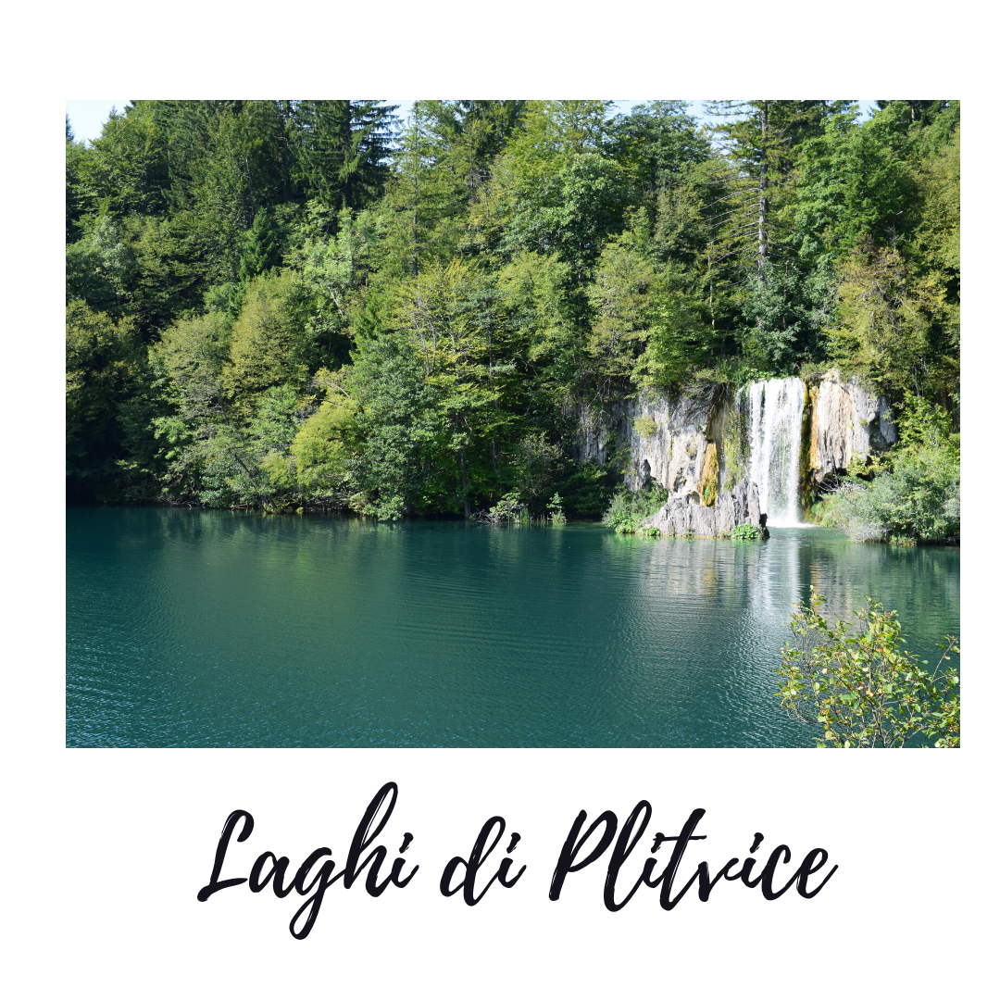
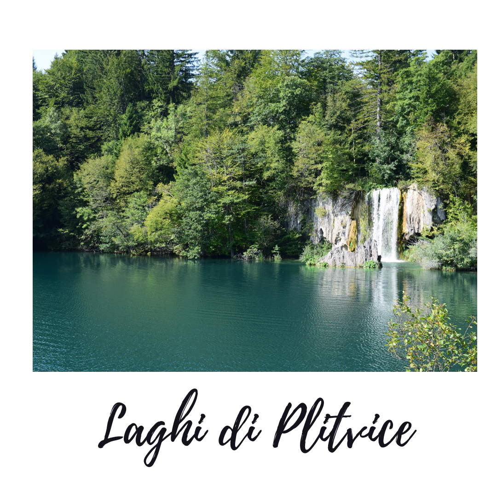
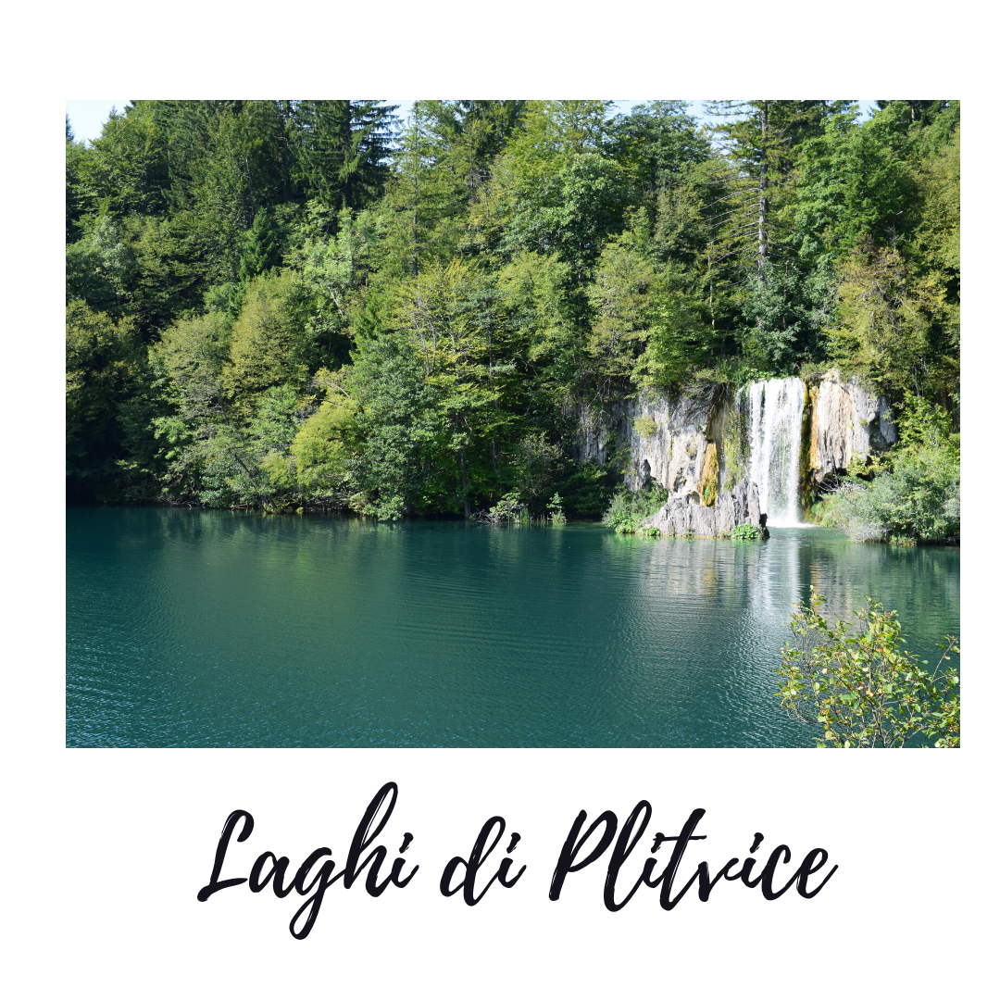

Mi chiamo Michelangelo Barulli. Sono uno studente del Politecnico di Torino, al terzo anno di Ingegneria Gestionale L9. Faccio parte del Percorso per Giovani Talenti finanziato da CRT. Sono nato a Castiglione del Lago, sulle sponde del Lago Trasimeno. Sono diplomato con votazione di 100 e lode presso il Liceo Scientifico Italo Calvino di Città della Pieve (PG). Amo viaggiare: scorri per vedere una raccolta delle mie foto in giro per il mondo!
A Multifaceted Characterization of Free-Floating CarSharing Service usage
After having witnessed the diffusion of car sharing systems during the lastdecade, the research...
Continue reading »
Attualmente sto svolgendo un tirocinio curricolare come Data Scientist Intern presso SmartData, un centro interdipartimentale del Politecnico di Torino. Sto lavorando su un simulatore del comportamento di flotte di vehicle sharing. Se sei interessato all'argomento, dai un'occhiata all'articolo qui a fianco! Sono un esperto del linguaggio Java, conosco bene C e SQL. Sto imparando HTML, CSS, Javascript e Python.
